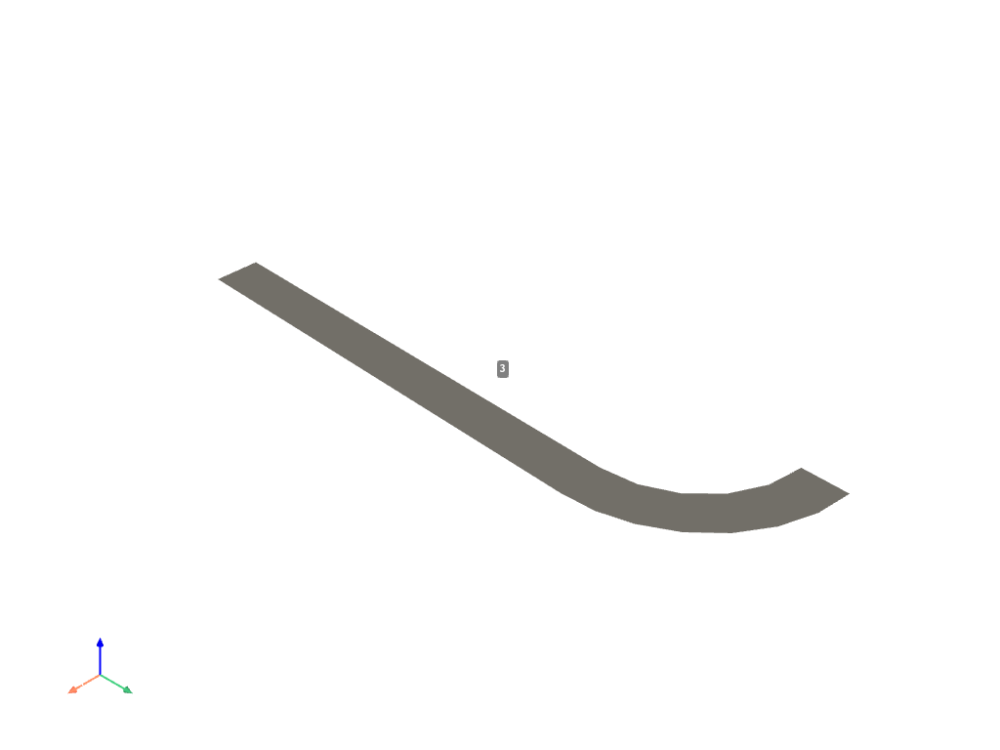
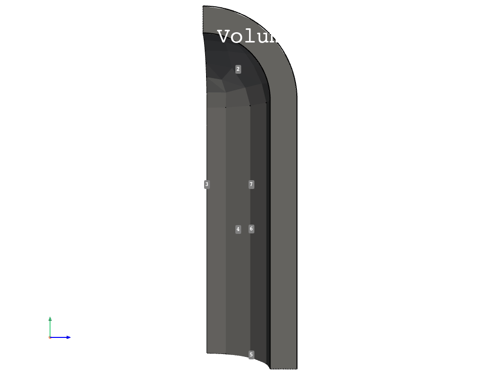

Note
Click here to download the full example code
Pressure Vessel#
This example demonstrates how to create a basic pressure vessel and apply a pressure to it.
Also shown here: - Various ways of accessing stress results from MAPDL. - Comparison between PRNSOL, VGET (efficient wrapping), and the legacy reader. - Notes regarding FULL vs. POWER graphics when using PRNSOL.
import numpy as np
from ansys.mapdl.core import launch_mapdl
# start mapdl, enter the preprocessor, and set the units
mapdl = launch_mapdl()
mapdl.clear()
mapdl.prep7()
# US Customary system using inches (in, lbf*s2/in, s, °F).
mapdl.units("BIN")
U.S. CUSTOMARY INCH UNITS SPECIFIED FOR INTERNAL
LENGTH = INCHES (IN)
MASS = LBF-S**2/IN
TIME = SECONDS (SEC)
TEMPERATURE = FAHRENHEIT
TOFFSET = 460.0
FORCE = LBF
HEAT = IN-LBF
PRESSURE = PSI (LBF/IN**2)
ENERGY = IN-LBF
POWER = IN-LBF/SEC
INPUT UNITS ARE ALSO SET TO BIN
Set the materials and element type
mapdl.et(1, "SOLID285")
mapdl.mp("EX", 1, 10e6)
mapdl.mp("PRXY", 1, 0.3)
mapdl.mp("DENS", 1, 0.1)
print(mapdl.mplist())
MATERIAL NUMBER 1
TEMP EX
0.1000000E+08
TEMP DENS
0.1000000
TEMP PRXY
0.3000000
Create the Geometry
# area generation
height = 10
inner_width = 2.5
outer_width = 3.5
mapdl.rectng(inner_width, outer_width, 0, height)
mapdl.cyl4(0, height, inner_width, 0, outer_width, 90)
# combine areas
a_comb = mapdl.aadd(1, 2)
mapdl.aplot(color="grey", background="w", show_area_numbering=True)
# Generate a cylindrical volume by rotating an area pattern about an axis
mapdl.vrotat(a_comb, pax1=6, arc=90)
mapdl.vplot(color="grey", background="w", show_area_numbering=True, cpos="zy")
- 
- 
Create the mesh
mapdl.smrtsize(1)
mapdl.esize(0.25, 0)
mapdl.mshape(1, "3D")
mapdl.mshkey(0)
mapdl.vmesh("ALL")
mapdl.eplot(color="grey", background="w")
Solve
# boundary condition selection
mapdl.geometry.area_select([3, 5, 7])
mapdl.da("ALL", "SYMM")
mapdl.allsel()
# apply pressure
mapdl.geometry.area_select([1, 6])
mapdl.sfa("ALL", 1, "PRES", 1000)
mapdl.allsel()
# solver
mapdl.run("/SOL")
mapdl.antype(0)
mapdl.outres("ALL", "ALL")
mapdl.run("/STATUS,SOLU")
sol_output = mapdl.solve()
mapdl.finish()
FINISH SOLUTION PROCESSING
***** ROUTINE COMPLETED ***** CP = 126.441
Post-Processing#
Enter the MAPDL post-postprocessing routine (/POST1) and obtain the von-mises stress for the single static solution. Here, we use MAPDL directly to obtain the results using a wrapper around the VGET method to efficiently obtain results without outputting to disk.
# enter the postprocessing routine
mapdl.post1()
mapdl.set(1, 1)
# results directly from MAPDL's VGET command
# VGET, __VAR__, NODE, , S, EQV
nnum = mapdl.mesh.nnum
von_mises_mapdl = mapdl.post_processing.nodal_eqv_stress()
# we could print out the solution for each node with:
print(f"\nNode Stress (psi)")
for node_num, stress_value in zip(nnum[:5], von_mises_mapdl[:5]):
print(f"{node_num:<5d} {stress_value:.3f}")
print("...")
# or simply get the maximum stress value and corresponding node
idx = np.argmax(von_mises_mapdl)
node_num = nnum[idx]
stress_value = von_mises_mapdl[idx]
print(f"\nMaximum Stress")
print(f"Node Stress (psi)")
print(f"{node_num:<5d} {stress_value:.3f}")
Node Stress (psi)
1 3301.403
2 1906.958
3 1387.545
4 1373.553
5 867.288
...
Maximum Stress
Node Stress (psi)
1004 3483.042
Plot the results
mapdl.post_processing.plot_nodal_eqv_stress(cpos="zy")
We could, alternatively, get the exact same results by directly accessing the result file using the legacy file reader ansys-mapdl-reader.
# access the result
result = mapdl.result
# Get the von mises stess and show that this is equivalent to the
# stress obtained from MAPDL.
nnum, stress = result.principal_nodal_stress(0)
von_mises = stress[:, -1] # von-Mises stress is the right most column
min_von_mises, max_von_mises = np.min(von_mises), np.max(von_mises)
print("All close:", np.allclose(von_mises, von_mises_mapdl))
All close: True
That these results are equivalent to results from PRNSOL.
Note
Enabling POWER GRAPHICS with mapdl.graphics('POWER') will
change the averaging scheme.
mapdl.header("OFF", "OFF", "OFF", "OFF", "OFF", "OFF")
table = mapdl.prnsol("S", "PRIN").splitlines()[1:]
prnsol_eqv = np.genfromtxt(table)[:, -1] # eqv is the last column
# show these are equivalent (RTOL due to rounding within PRNSOL)
print("All close:", np.allclose(von_mises, prnsol_eqv, rtol=1e-4))
print(f"LEGACY Reader and MAPDL VGET Min: {min_von_mises}")
print(f"PRNSOL MAPDL Min: {prnsol_eqv.min()}")
print()
print(f"LEGACY Reader and MAPDL VGET Min: {max_von_mises}")
print(f"PRNSOL MAPDL Min: {prnsol_eqv.max()}")
All close: True
LEGACY Reader and MAPDL VGET Min: 691.8562018090861
PRNSOL MAPDL Min: 691.8562017
LEGACY Reader and MAPDL VGET Min: 3483.0418952187233
PRNSOL MAPDL Min: 3483.041895
stop mapdl
mapdl.exit()
Total running time of the script: ( 0 minutes 6.774 seconds)